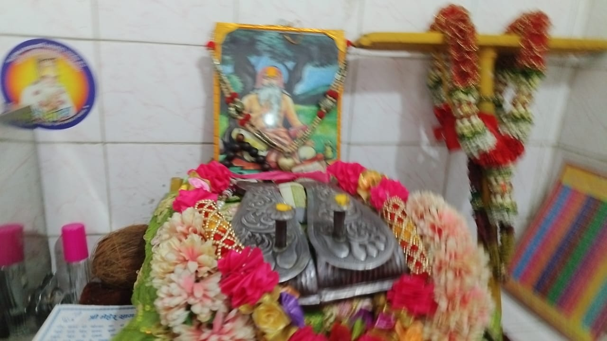

सद्गुरु & परमहंस
संक्षिप्त परिचय
श्री 108 श्री अनन्त श्री गोपाल मणि जी महाराज परमधाम की श्री राज जी महाराज की
पुष्पावती ( प्रेम सखी ) नाम की अंगना है l उन्होंने अपने धाम हृदय में युगल स्वरुप को
विराजमान कराया l उसके बाद आपका यह प्रकट पूर्ण पुरुषोत्तम स्वरुप परमहंस गोपालमणि जी
के नाम से जग में विख्यात हुआ l जगत में धर्म उत्थान के लिए कलियुग के 4660 वर्ष व्यतीत
होने पर आपका जन्म संवत 1616 में मधुबनी ग्राम में पिता पं०विभूषण वेदमणि तथा माता
सुलक्षणा के घर में हुआ l जन्म से ही आप दिव्य आकर्षण मोहित रूप युक्त थे l आपने 8 वर्ष
की आयु से गांव से 5 कोस की दूरी पर स्थित कलावतीपुर में पूज्य कुलगुरू के आश्रम में
विद्याध्ययन प्राप्त किया l उसके बाद ये साधू महात्माओं की प्रेरणा से प्रेरित होकर
कांशी के लिए विद्याध्ययन के लिए चल दिए l पहले वो अपने गुरू के पास जा रहे थे तो
रास्ते में महात्मामंडली के साथ रामनवमी का मेला मनाने चल पड़े l
वहां से प्रयागराज मेले में आपने भारतद्वाज ऋषि के आश्रम में निवास किया l इस
समय आपकी उम्र 18 वर्ष की थी l जब आपको गंगा में स्नान करते करते तीन दिन हो चुके ,तो
अर्धरात्रि में जब आप भजन में तत्पर थे , उसी समय गंगाजी ने देवी का रुप धारण करके आपके
चरणों का स्पर्श किया और कहा कि मैं अब निर्मल पवित्र हो गई l तब आपने उनसे पूछा कि तुम
कौन हो देवी जो इस प्रकार मेरी स्तुति कर रही हो l तब गंगा जी ने कहा कि राजा सगर के
लड़के कपिल मुनि के श्राप से भस्म हो गए थे , तब उनको तारने के लिए मेरी तथा ब्रह्मा जी
की तपस्या 3 पीढी तक की थी l तब ब्रह्मा जी के पूछने पर भागीरथी ने हाथ जोड़ कर अपने
पूर्वजों के उद्धार के लिए कहा कि हम गंगाजी को पृथ्वी पर ले जाना चाहते हैं l इस
प्रकार मृत्युलोक पाप से कम्पित हो कर कहा कि मैं नहीं जाऊंगी l तब विष्णु ने मुझे
बुलाकर कहा कि हे गंगे तुम मृत्युलोक में जाओ और राजा सगर के लडकों से लेकर जितने
मृत्युलोक में पापी जन शुद्ध दिल से स्नान करने पर पाप मुक्त हो जायेंगे तत्उपरान्त
ब्रह्मा जी ने कहा कि तुम्हारे सभी दुख व पाप तब मुक्त होंगे जब अठ्ठाइसवे कलयुग के
पांच हजार वर्ष के बाद हमारे परम प्रिय मुनिजन महामंत्र तारतम के उपासक प्रकट होंगे l
आज विष्णुजी के वचन सत्य हो गए मैं आपके चरणों से पवित्र हो गई l गंगाजी ने कहा कि वे
ब्रह्ममुनि आप ही हैं और गंगाजी फिर अन्तर्ध्यान हो गई l आपने 1 मास प्रयाग में रह कर
महात्माओं के सत्संग का लाभ लिया l इसके बाद आप काशीपुरी आए और वहां पर आपने शंकर जी का
दर्शन किया l गंगा किनारे उसी घाट पर चार बजे रात्रि को आप विद्या अध्ययन सागर में
तल्लीन थे l आप को देख कर सरस्वती देवी ने प्रगट होकर प्रणाम किया l आप उनके रुप को देख
कर घबराकर बोले हे मातेश्वरी आप कौन हैं l तब देवी ने उत्तर दिया मैं सरस्वती सर्व
विद्यधिपति हूं l

श्री अनन्त श्री गोपाल मणि जी महाराज
आप विद्याधिपतियों के देव हो l आप चिंता न करें l आप ब्रह्मचारी
महाराज आप अपने स्वरुप को भूले हुए हैं l आपको सम्पूर्ण विद्या इस नश्वर जगत में
प्रकट होंगी l तभी से आप को सभी विद्याओं का अनुभव होने लगा l आपने काशीपुरी 2 वर्ष
रह कर माता पिता को बुलाकर वेदशास्त्र द्वारा अनेक प्रमाणिक तथ्य देकर आप विरक्त हो
गए l इस समय आपकी आयु 20 वर्ष की थी l आप श्री कृष्णजी के भजन चिन्तन में मग्न हो
गए l
संवत 1636 के बाद आपने ब्रह्मचारी भेष का परित्याग कर परमहंस भेष धारण किया l परमहंस
भेष में संसार में विचरण करते हुए चित्रकूट होते हुए जगन्नाथपुरी , रामेश्वरपुरी ,
नासिक , पंचवटी , नर्मदा , गंगा , डाकोर , गिरनाल पाटन व सुदामापुरी , द्वारिकापुरी आकर
1 वर्ष रहे l इस समय आपकी उम्र 23 वर्ष थी l फिर वृन्दावन प्रस्थान किया l फिर हरिद्वार
बद्रिका आश्रम नरनारायण का दर्शन किया l तत्पश्चात केदारनाथ , गंगोत्री जम्बोत्री
नीलगिरी कैलाश पर गए l संवत 1647 में आप 31 वर्ष के हुए l
आप यहां से फिर महागम्भीर सघन वन में प्रस्थान किया l रमणीक स्थान देखकर आप त्रिशंकनाथ
महायोगीराज की कुटिया में उनको प्रणाम किया l योगीराज ने ऊपर सिर उठाकर दृष्टि से आपके
तेजयुक्त दिव्यस्वरूप विरक्त वैराग्य युक्त को देखा और कहा कि आपने मुझपर दयादृष्टि की
है l तब इन्होंने कहा हे योगेश्वर महाराज आत्मा के कल्याण वाले वह प्रभु कैसे मिलेंगे l
उन्हीं की खोज में तीर्थों का भ्रमण एवम सन्त महात्माओं का सत्संग लेते हुए जंगलों
पहाड़ों , दुर्गम स्थानों के मध्य से होकर आपकी शरण में आया हूं l आप मुझे आत्मदर्शन
कराइए l त्रिशंकनाथजी ने उनको आत्मा की पहचान और परब्रह्म परमात्मा को पाने के लिए
अष्टांगयोग साधन आवश्यक है यह कहा l
श्री अनन्त श्री गोपाल मणि जी महाराज
आप उस समय विक्रम संवत 1653 में वर्ष के थे l योगसाधन के आठ अंग , यम , नियम , आसन
प्रणायाम प्रत्याहार , धारणा , ध्यान , एवं समाधि का विधि पूर्वक साधन व योग के षट्
उपअंग सम दम उपरिती तितिक्षा समाधान व विश् वास तथा चक्र , दल , कमल अक्षर , रंग , नाणी
, पंचतत्व देहवसान , जप , तथा मुद्रा बन्धन खेचरी सब योगसाधन पूरे किए l इन सब क्रियाओं
के बाद समस्त सिधियां आपमें प्रवेश हो गई l इस प्रकार आपको विचित्र शक्तियां प्राप्त
हुई l गुरु त्रिशंकनाथजी को प्रणाम किया तो उन्होंने योगपरीक्षा से प्रसन्न होकर आपका
नाम गोपालनाथ महायोगीराज रखा l वहां 3 वर्ष रहकर पुनः जंबूद्वीप जिसमें 9 खण्ड हैं
जिसका विस्तार पुराणों में 1 लाख योजन है l इन सबका भ्रमण करते हुए समस्त खण्डों कई
प्रदीक्षणा की l महासघन रमणीक वन में जाकर शान्ति प्राप्त की और वहीं पर आपने समाधि
लगाई 12 वर्ष तक l
श्री अनन्त श्री गोपाल मणि जी महाराज
समाधि से जब जाग्रत हुए तब आप 55 वर्ष के थे l इसके पश्चात आप पुनः भ्रमण को निकले ,
नरसिंह जी के स्थान पर कुछ समय रहे l फिर इलावर्त खण्ड भ्रमण किया l तब आपकी आयु विक्रम
संवत 1701 में 85 वर्ष थी l आपने सुमेरू पर्वत की भी परिक्रमा की l फिर केतुमाल खण्ड
में सब दृश्यों को देखा और आप समाधि लगाकर एकाग्रचित हो गए l समाधि जाग्रत के बाद फिर
कक्षप अवतार हिरण्यमयखंड में अवलोकन करते हुए विक्रम संवत 1734 में आप 118 वर्ष के थे l
तत्पश्चात रम्यक खण्ड , वाराह रूप , जलदिश व वंदिश , हरि खण्ड कंचन गिरिश पर्वत ,
दुर्गम शिखर पर चढ़े l वहां कई प्रकार के वृक्षों लताओं फूलों , सरोवरों को अवलोकन करते
हुए कैम्पुरुष खण्ड , समुद्र तट , हिमालय पहाड़ में
सतयुग त्रेता द्वापर एवं कलियुग के सभी महर्षि , मुनि , योगेश्वर , सिध्दीसमाधि में
जाकर दर्शन व सतसंग का लाभ लिया l वहां से गिरि , कन्दरा , गंगासागर पहुंच कर
संक्रान्ति पर कपिलदेवमुनि का दर्शन किया l तब विक्रम संवत 1747 में 131 वर्ष के थे l
श्री अनन्त श्री गोपाल मणि जी महाराज
आपको जहां जैसे स्वरुप की आवश्यकता होती वैसा स्वरुप बनाकर भ्रमण करते थे l आप एक क्षण
मात्र में 1सहस्र कोस की मंजिल तय करना आपके लिए कुछ भी असम्भव न था l परमतत्व की
प्राप्ति न होने पर अपको अति दुख हुआ l विक्रम संवत 1832 में आप 216 वर्ष के थे l इसके
बाद निम्बार्क सम्प्रदाय में अपना जन्म से लेकर अब तक वृतांत सुनाया l उन्होंने कहा हे
योगेश्वर आप श्री कृष्ण भगवान का अनन्य प्रेम भक्ति से स्मरण करो l तब आपने प्रकाश दास
जी से चूड़ामणि मंत्र लिया व एकान्त में आसन लगाया l इस समय आपकी उम्र 225 वर्ष की थी l
12 वर्ष तक आपने श्री कृष्ण स्वरुप में तन , मन , जीव , आत्म रोम रोम में कृष्ण किशोर
रुप नाचने लगा l क्षण में रोना , हंसना , मुग्ध होना ऐसी दशा हो गई l इस कठिन साधना का
से कृष्ण जी का मोहक मुस्कुराने वाला रुप आपके हृदय से अदृश्य हो गया l जैसे ही वह
स्वरुप अदृश्य हुआ तो वे चौक पड़े l जाग्रत होने पर देखा कि तेजोमयी मण्डल नाच रहा है l
उसी मण्डल में उन्होंने अत्यन्त दिव्य स्वरुप आपको मनोहर छवि के रूप में आपको साक्षात
नजर आने लगा l उस स्वरुप के अंग अंग का चितवन कर अपनी आत्मा में उस छवि को बसाते गए l
श्री सचिदानंद अक्षरातीत राज जी महाराज ने प्रकट होकर मुस्कुराते हुए बोले हे प्रिय
पुष्पावती सखी की आत्मा जिस कारण तुम उग्र कष्ट उठाकर इस नश्वर संसार में पूर्ण ब्रह्म
को खोज रही हो वो मैं ही हूं l यह स्वरुप जो तुम्हारे समक्ष है , इसे प्रत्यक्ष कोई
नहीं देख सकता l तुम मेरी अंगना हो इसी कारण देख पा रही हो l अब जो तुम्हारी इच्छा हो
वर मांगो राज जी को प्रसन्न देखकर विनय पूर्वक वर मांगा—हे प्रभु मेरी आत्मा में सदा के
लिए निवास कीजिए l एवमस्तु कहकर आपमें विराजमान हुए l राज जी के आदेशानुसार आपने दक्षिण
को प्रस्थान किया l उस समय आप 238 वर्ष के थे l एक वृक्ष के नीचे उन्होंने आसन लगाकर
सतगुरु का भजन किया l सतगुरू निजानन्द स्वामी ने आपको दर्शन दिया l निजानन्द स्वामी ने
उन्हें बताया कि श्री राज जी के साथ 12000 ब्रह्म आत्माए रसानंद का पान करती हैं l
तुम्हारे 12000 के चालीस जुत्थ हैं l तुमने दुख का खेल मांगा और यहां स्वपन के संसार
में आ गई हो l ब्रज , रास , के बाद अब तुम तीसरे ब्रह्माण्ड में आ गई हो l तुम अपनी उन
सखियों को जाग्रत करो l
निजानन्द स्वामी महामंत्र तारतम उन्हें सुनाकर अन्तर ध्यान हो गए l अब गोपालमणि जी की
दिव्य दृष्टि हो गई थी l उन्हें मृत्यु लोक से परमधाम तक दृष्टिगोचर होने लगा l विक्रम
संवत 1856 में 240 वर्ष के थे तब आपने श्री पन्नाजी को प्रस्थान किया l पन्ना में 15
दिन रहे , वहां जब आत्माएं जाग्रत होने लगीं , और आत्माओं का मेला ब्रज की भांति बढ़
चला l सर्व प्रथम गब्बर सिंह मिश्र की विनय पर आपने जागनी भूमि का रकबा अपनी छड़ी से
खींच दिया और मन्दिर निर्माण शुरू हो गया l जब मन्दिर बनकर तैयार हो गया तब आपने
पदमावती पुरी पन्ना में आकर सेवा पूजा का दिव्य राज स्वरुप क़ुलजम स्वरुप लाए , और धूम
धाम से समारोह मनाया तथा सेवा पूजा की स्थापना विक्रम संवत 1861 में की l आनन्द अंग
जोड़ी की सेवा बड़े उत्सव के साथ हुई l
श्री परम हंस गोपालमणि ने वहां अनेक ब्रह्म आत्माओं को जाग्रत किया l सारे कार्य करने
के एक वर्ष बाद आपने परमधाम जाने की बात बताई l विक्रम संवत 1918 में आप 302 वर्ष के थे
l तब असाढ़ मास दिन रविवार के पिछले पहर में आप कुछ विशेष निर्देश देकर ध्यानावस्थित हो
गए l लोग रोने बिलकने लगे तो आपने पुनः सबको सांत्वना दी l उन्होंने कहा यह मन्दिर
मुठ्ठी पर चलेगा और दैनिक क्रियाएं होती रहेंगी l आपने पुनः पृथ्वी पर हाथ फेरा , समस्त
लोगों के समक्ष तीव्र प्रकाश फैल गया l सबकी दृष्टि अवरुद्ध हो गई l क्षण मात्र में
देखते ही देखते आपका स्वरूप ओझल हो गया l

सप्रेम प्रणाम जी !
सद्गुरु & परमहंस संक्षिप्त परिचय पढ़ने के लिए और समय निकालने के लिए धन्यवाद.
मैं आपसे अनुरोध करता हूं कि आप मुझे अपनी ईमानदार प्रतिक्रिया दें।